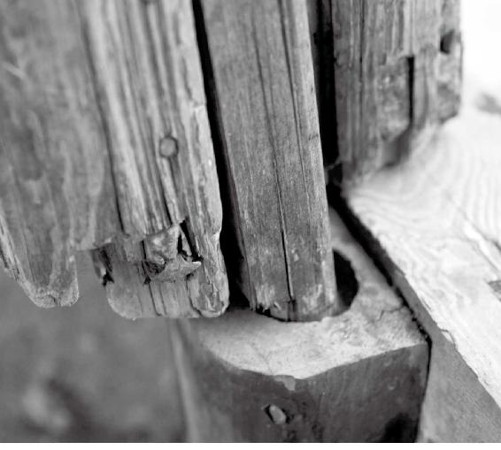
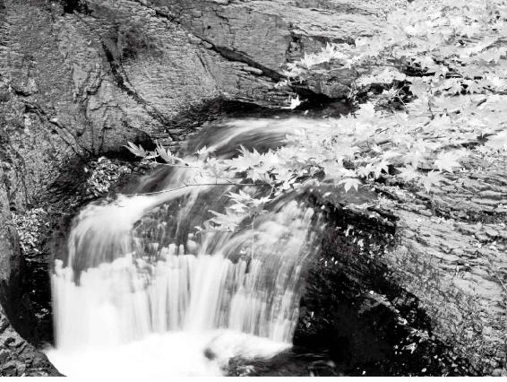
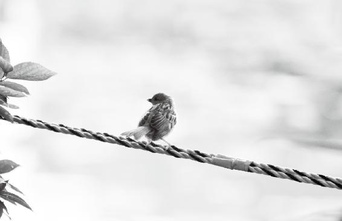

“中”，就是我们说的中原地区，相当于现在江淮平原一带，包括河南、安徽的淮河流域一带。中原地区处于长江和黄河中间，往东就是江苏、山东，往西就到了湖北、四川。
这一带的地理特点是什么呢？地势平缓。这种地势环境造成了一种现象，就是《黄帝内经》中说的，这地方非常适合人类居住。
黄泛区像尼罗河一样，河水每泛滥一次，洪水会冲走房屋、建筑，淹死很多人。但是同时也会形成一片肥沃的土地，在上面种庄稼，收成非常好，所以这地方比较容易养活人。因此，称它是“天地所以生万物也众”。
中原人食杂而不劳，容易出现的第一个问题是“痿”——肌肉不能用，或者说肌腱不能发力。而他们容易出现的第二个问题叫“厥”。
经文：
中央者，其地平以湿，天地所以生万物也众。其民食杂而不劳。故其病多痿厥寒热。其治宜导引按跷。故导引按跷者，亦从中央出也。
中原地区最适合人类居住
“中央”指中国的什么地方
梁冬：《黄帝内经》上讲，“中央者，其地平以湿，天地所以生万物也众”，这作何解？
徐文兵：这个“中”，就是我们说的中原地区，相当于现在江淮平原一带，包括河南、安徽的淮河流域一带。中原地区处于长江和黄河中间，往东就是江苏、山东，往西就到了湖北、四川。
这个“中”，就是我们说的中原地区，相当于现在江淮平原一带，包括河南、安徽的淮河流域一带。中原地区处于长江和黄河中间，往东就是江苏、山东，往西就到了湖北、四川。
这一带的地理特点是什么呢？地势平缓。华北大平原往南延伸，就是江淮平原。这个“平”，大家可能没有感觉。举个例子，河南有个黄河大堤，这个黄河大堤又叫地上悬河。为什么叫悬河？就是说河水从黄土高原（比华北平原高1000米的地方）冲下来以后，就一马平川了。所以，为什么历史上中原总发洪水，就是因为地势悬殊，河水一过了三门峡，就开始一泻千里。如果不用一个强有力的大堤约束它，那么河水就如同“龙摆尾”，总是在变换河道。
所以说，看一下河南一带的地势，就能感觉到什么叫“其地平”。再看看河南黄泛区形成的那种沼泽，还有那种小块的沙漠，就能感觉它的湿气了。这种地势环境造成了一种现象，就是后面《黄帝内经》中说的，这地方非常适合人类居住。
黄泛区像尼罗河一样，河水每泛滥一次，洪水会冲走房屋、建筑，淹死很多人。但是同时也会形成一片肥沃的土地，在上面种庄稼，收成非常好，所以这地方比较容易养活人。因此，称它是“天地所以生万物也众”。
“圣人出，黄河清”——中原的地理特点对人有哪些利与弊
徐文兵：黄河从黄土高原（陕西、山西的交界）从北向南奔腾而下，到了三门峡这儿就开始一马平川了。在这奔流的过程中，裹挟了大量的泥沙，这是黄河的天性。古代有一句话叫“圣人出，黄河清”，可见中原地区要出现一个圣人有多难。
古代有一句话叫“圣人出，黄河清”，可见中原地区要出现一个圣人有多难。
建国以后，政府在黄河修了一个三门峡水库。但是没有考虑到黄河携带的泥沙和淤泥，所以建着建着，整个水库就被慢慢淤塞了，而且发大水时连带着把上游的渭河平原也淹了，这是一个比较惨痛的教训。
现在国家又在小浪底修了个水库，这次就充分认识到了黄河挟带泥沙的危害性，所以它每年都有“冲沙”，就是让大量的水“哗”一下出来，有一种“蓄势”，带着气往下走，从而把黄河故道里的泥沙一层一层往下刮。
这比以前的方法好多了。原来是黄河一流，泥沙一沉淀，咱们就得加固大坝，慢慢地大坝越垫越高，黄河就成了天河、悬河，成为悬在我们头上的一把利剑。
1986年，我去开封参观铁塔（开宝寺塔），当地人跟我说，黄河水道跟这开封铁塔一般高，有50多米。可想而知，要是这种高度的水冲下来，确实是个大问题。当地人还告诉我，开封城摞着好几个开封城。
当地人还告诉我，开封城摞着好几个开封城。
梁冬：此话怎讲？
徐文兵：就是说，黄河发一次水，泥沙一淹，就把原来的开封城整个地埋了下去。然后，勤劳勇敢的劳动人民又在这上面盖一个新城。建好之后，“哗”又再发一次洪水，又给盖住了。反复如此，新城摞着旧城。
梁冬：这得隔很多年才会发这么大的洪水吧？
徐文兵：在科技不发达的旧社会，这种黄河改道的事情很频繁。所以，为什么说河南人民生活得灾难深重，这里历来都是水患频繁。一个黄河，一个淮河，一发水，就将他们好不容易积蓄起来的家业冲没了。
为什么说河南人民生活得灾难深重，这里历来都是水患频繁。一个是黄河，一个淮河，一发水，就将他们好不容易积蓄起来的家业冲没了。
梁冬：我们中学的历史、地理课学过，两河流域（埃及地区）也是因为河水这样的泛滥，促使当地的文化快速发展起来。所以说，一利一弊，很难说。
人不劳动，身体就会生痿症和厥症
梁冬：“其民食杂而不劳”，这是什么意思呢？
徐文兵：这就是中原地区的特点了。黄河泛滥有弊也有利，这个地方出产的植物比较丰盛，所以当地人不必劳作得太辛苦，就可以养家糊口。
像东边靠海的人们，要靠打鱼为生；西方呢，属金石之域，土地比较瘠薄，人活得也比较艰难；北方的游牧民族还得养牛放羊；南方人因为气候特点，要吃一些发酵的食物，都过得比较辛苦。相对来说，中原地区的人就轻松多了。
这个“劳”字，繁体字写作“勞”，上面有两个“火”，底下是一个用力。也就是说，古人活着日出而作、日落而息就够了，“劳”有点加班的意思。而现在的加班族堪称点灯熬油，下班的时候看别人不走自己也不好意思走啊！
这就出来一个问题，既然中原地区的人不必为生活奔波辛苦，那他们是不是就不得病了呢？
既然古代中原地区的人不必为生活奔波辛苦，那他们是不是就不得病了呢？
梁冬：也很难说！《黄帝内经》上说是“故其病多痿厥寒热”。
痿症就是“不来劲，起不来⋯⋯”
徐文兵：上一次我们说南方人容易生什么病？挛痹，挛就是抽筋。举个例子，足球运动员在场上奔跑过度以后，会有一个反应——倒在地上抽筋。这个抽筋就叫痉挛。这时候，来一个哥们儿，把他脚尖往后扳，拉筋儿，这叫治“挛”。
过劳的人会“痉挛”，那么反过来，不劳的人会出现什么？跟那个“挛”相对的词叫“痿”。“痿”是“病”字边里面一个委员长的“委”，是什么意思？过度松弛，就是不来劲，起不来。为什么说男人性功能不行叫阳痿呢？就是说阴茎起不来了。
听到这儿有的人可能会想，不劳动会“痿”，劳动过头又抽筋，你到底让我干什么？
任何事情不要走极端，人要适当劳动。
比如说你买一辆车，你要是特别珍惜这辆车，说：“哎呀！我太喜欢这辆车了，就放在车库里不开了。”那会出现什么结果？这辆车坏得更快。为什么？因为这个车的零件需要磨合，需要动。
就拿轮胎来说，它需要以不同的面接触不同的地儿来着力。要是你把车停在那儿，就一个地儿受力，它会坏得更快。所以说，真正对车的养护就是让它动。但是，你又不能总是以好几百迈的速度飚车，要取个适中的速度。
现在好多人问养生的问题，到底动还是不动？过度运动会导致痉挛——抽筋。过度地不动会导致什么？痿厥！
现在好多人问养生的问题，到底动还是不动？过度运动会导致痉挛——抽筋。过度地不动会导致什么？痿厥！
用进废退！凡事不要走极端。
厥症就是“气血倒流”
徐文兵：中原人食杂而不劳，容易出现的第一个问题是“痿”——肌肉不能用，或者说肌腱不能发力。而他们容易出现的第二个问题叫“厥”。
梁冬：痿和厥有什么不一样呢？
徐文兵：“厥”叫厥逆，就是气血倒流。中医说的四肢厥冷是什么意思？就是说气血到不了四肢上。
我们身体里有两种气，一个叫营气，它走在血脉当中，先是从心脏出发，到达动脉，然后又从静脉回流。还有一种气是经气，它不在血管里，而是在细胞间慢慢儿地渗透。
关于这个经气，《黄帝内经》里有两种学说。一种学说认为它是离心的，从心往四肢末梢上走，然后再从四肢末梢回来。还有一种学说认为，经气先走手三阳，就是从手往脸上走，然后再走手三阴，从胸往手上走；接着走足三阳，从脸往脚上走；最后走足三阴，从脚往胸口走。
这是学术界一直都在讨论的问题。后来，武当山祝华英道长通过内证内修的方式观察到，身体左右的经气是相对的。当左手的经气，比如说手三阳经往上走的时候，相对的右手的手三阴经气是往下走的，而不是说手三阳必须从手腕往脸上走，手三阴必须是从胸往手上走。他所看到的，是对立统一、左右平衡的一条线路，这种解释非常完美地把《黄帝内经》里相对矛盾的学说统一起来。
即使你没有体验，也可以按古人的经验去做，因为中医的精华都是在前人经验上总结出来的。
梁冬：这就说明中医也是内证内修的一门学问？
徐文兵：必须的！即使你没有体验，也可以按古人的经验去做，因为中医的精华都是在前人经验上总结出来的。
现代人的通病也是痿症和厥症
梁冬：我们讲《素问·异法方宜论篇第十二》的“中央者”，用了1个小时，大概讲了20个字左右，现在讲到了“故其病多痿厥寒热”。
徐文兵：推而广之来讲，我们国家叫“中国”，其实，中国人容易得的病都跟这个地域有关系。古代的“中”是指中原地区，然后向四周发展，而我们现代人是不是也有“食杂而不劳”的问题呢？
梁冬：对，很典型嘛！
徐文兵：是吧？古代人生活要“渔樵耕读”，都要去动的。但我们现在基本上都是往办公桌前一坐，挤个地铁就算劳动量很大了！古代把这种光动脑子不动手的人得的病叫虚劳，也就是说，虽然他没动，但是他也很辛苦，动脑子，耗脑油太多了。
古代把这种光动脑子不动手的人得的病叫虚劳，也就是说，虽然他没动，但是他也很辛苦，动脑子，耗脑油太多了。
现在电脑一普及，大家都盯着电脑屏幕打游戏、写文章、看股市的起伏跌宕……其实也都在劳。所以，很多人说：“我这盯着电脑屏幕以后，一天到晚都感觉很累。”这种劳叫虚劳，它耗伤的不是人的后天之气，而是先天的元气，很伤神！
不仅如此，有的人退休在家无所事事，整天就看看电视，其实那也是在虚劳。为什么叫虚劳？电视里的人哭，他也跟着哭；电视里的人笑，他也跟着笑……整个人沉浸在剧情里，看起来没劳动，其实脑子里劳动很多。所以，现在得“痿厥寒热”的人不在少数。
有的人退休在家无所事事，整天就看看电视，其实那也是在虚劳。为什么叫虚劳？电视里的人哭，他也跟着哭；电视里的人笑，他也跟着笑……整个人沉浸在剧情里，看起来没劳动，其实脑子里劳动很多。
徐文兵：再回来说这个“厥”病，气血不往四肢末梢上走，而是倒流，那么这种人会出现什么情况？
举个例子，人一抽烟手脚肯定要发凉，为什么呢？抽烟叫“置之死地而后生”，就是说，抽烟的人吸入的空气里氧气含量不够了，于是大脑就处于一种应急状态，马上调动全身的气血供应心脑。同时，大脑舍了哪儿的气血？就是手脚。
此外，人在冷天的时候能量不够用，大脑也会舍弃末梢，即四肢的气血能量，从而供应心脑。
还有一种情况，人们在发高烧的时候，会蓄积自己所有的阳气和能量，去和外界的病毒、邪气作斗争。这时候，大脑也会节约一些枝节末梢的能量供人体需要。所以很多发高烧的孩子，脑门特烫，手却冰凉。像这种情况，到底是发烧还是发冷？
所以，伤寒论有一句话叫“厥深者热亦深”。
孩子发烧父母可以做的三件事
梁冬：小朋友要是发烧的话，送儿童医院是很痛苦的，还要打吊针。那么中医里有可以在家治疗的方法吗？
小孩子是纯阳之体，他不怕寒，怕热，而且怕营养过剩。所以，古人说“若要小儿安，三分饥与寒”，别给他塞得太饱。
徐文兵：方法有很多。但是呢，小孩子发烧一定要先观察，判断他是受风了，受寒了，还是受热了。
小孩子是纯阳之体，他不怕寒，怕热，而且怕营养过剩。所以，古人说“若要小儿安，三分饥与寒”，别给他塞得太饱。
现在孩子一发烧，扁桃体一肿大，人们就说“啊，感染了，发炎了，赶紧去打抗菌素”，这真是在害孩子。为什么？他其实就是吃多了营养过剩，胃火太旺往上顶，把自己的扁桃体顶大了。这时候，家长只要给他消食、化积，让他拉出一顿臭屎来，烧自然就会退。
现在孩子一发烧，扁桃体一肿大，人们就说“啊，感染了，发炎了，赶紧去打抗菌素”，这真是在害孩子。
但现在好多治疗方法就是隔靴挠痒，隔靴搔痒还不大正确，简直就有点儿胡治、乱治了。其实，退烧的方法有很多。我记得以前我的老师说过，如果你给家人看病，可以先观察两天，只要不出生命危险。
我记得以前我的老师说过，如果你给家人看病，可以先观察两天，只要不出生命危险。
但外人来看病呢，一来就想着要大夫给他退烧。退烧，那很简单呀！一发汗烧不就退了吗？可烧退了后再热起来怎么办？所以，我们要从根本上来治疗这个发烧。
我的观点，第一要通肠胃。遇到发烧的病人，我一般先摸肚子，如果他的肚子里面疙里疙瘩的，摸着巨痛，就得先通肠胃，把六腑通了。这个消热的办法我管它叫“釜底抽薪”。人为什么发烧？就是底下柴火太多了嘛，撤一点，就好了。
第二个，如果病人确实高烧特别厉害，而且手又冰凉的话，那怎么办？这症状一看就是邪热，就是说敌人烧了把火到我的体内，那我就围魏救赵，把它的兵力分散了。病人的手不是冰凉吗？所以咱就给他捋胳膊，特别要捋手臂内侧的三阴经——肺经、心胞经、心经。捋到手慢慢发热了，然后再在指尖的中冲穴（中指的中间）针刺、放血。挤出一两滴黑血以后，额头的热很快就能退掉。
这说的方法是治风热感冒（热邪），而治风寒感冒（寒邪）的方法不大一样。
治风寒感冒就得吃发汗药或者推背。寒邪要经过大概要六个阶段，才能达到人的心。而热邪先到肺，接下来是心胞，然后就到心了。
大家可以用这些简单的物理方法，先去帮助孩子退烧。
风寒感冒和风热感冒的判断方法
梁冬：那怎么判断病人患的是寒邪还是热邪呢？
徐文兵：望、闻、问、切。还有一个诀窍，患寒邪的人一般会表现为发烧、怕冷，一边烧得厉害，一边还要裹被子，打寒战，门口稍微漏点风都难受。那患热邪的人是什么表现？袒胸、踢被子。所以说，同样是发烧，一个自己要盖被子，一个要蹬被子，这大概是最简单的区分方法。
同样是发烧，如何分辨病人受的是寒邪还是热邪呢？一个自己要盖被子，一个要蹬被子，这大概是最简单的区分方法。
梁冬：我觉得，已做妈妈、爸爸的朋友可以把它记下来。有些时候，特别是晚上小朋友发起烧来真的很可怕。如果父母在家能采取一些措施救急，那真是无量寿佛的一件事情。
徐文兵：现在，很多人在孩子或自己生病的时候，处于一种极度无助的状态。他们这时候首先考虑怎么能让自己没有心理负担。什么叫没有心理负担？就是不被别人谴责。
顺着这个思路推理下去，对家长来说，孩子发烧了，赶紧送到某某医院，然后挂上吊瓶。潜意识里告诉自己，大家都这么做，即使孩子治不好，我心里也没有负担。但如果孩子发烧了，家长用中医的方法去治，治好了谁也不说，可治坏了呢，中医大夫就成了千古罪人。所以，大家都是采用前一种不担责任的方法给孩子治病。
梁冬：用的是在单位里的那套处事模式。
徐文兵：对。所以说，我们做中医传播，其实是帮助大家重新建立一个价值观。
“秋天里得了一场温病”
徐文兵：中医治疗感冒效果是最好的，而且没有副作用。我小时候每次发烧、感冒，最后都是用中医治好的，没用过一次西药。因为我有一位做中医的母亲。可是现在的人呢，孩子感冒、发烧，马上就送医院输液，这样做其实对孩子不好。
中医治疗感冒效果是最好的，而且没有副作用。我小时候每次发烧、感冒，最后都是用中医治好的，没用过一次西药。
我上中医药大学的时候，伤寒教研室有位老师姓裴，叫裴永清，这位老师给孩子看病，哪怕是发高烧，用药从来没超过三付。往往都是吃半付药，孩子的烧就退了。
当时我们这些学生觉得，啊，原来中医能治感冒。裴老师听了很生气，说：“《伤寒论》治什么呀？不就是这些突发的伤寒急症吗？”后来，我们跟老师抄方，又亲眼看着那些孩子快速退烧，对中医满心信服。
中医是能治急症的，包括急腹症、急性阑尾炎。1976年秋天，我11岁，得了一次高烧，以前我妈给我用点小药就好了，但是那次用什么药都不灵，最后烧得我开始昏迷、说胡话了。热一般在肺、心胞，要是热到神昏谵（zhān）语，就是说胡话，这说明已经烧到心，影响心神了。
中医是能治急症的，包括急腹症、急性阑尾炎。
当时我妈也慌了。为什么说医不自治？医生给别人下药狠着呢，对自己和家人心态不一样！
梁冬：掺杂了个人情感啊！我认识那些易经大师给自己算命没一个算得准的。
徐文兵：对，我们说“医者，意也”，“意”需要冷静的思考。如果医生是给自己的父母或者亲近的人看病，一动心，就容易出问题。
如果医生是给自己的父母或者亲近的人看病，一动心，就容易出问题。
没办法，我妈把我带到了医院。西医大夫说，是脑膜炎要抽脑脊液，我妈一听害怕了，不让抽，还是把我抱回家了。后来，我妈请动了她的一个师兄。我妈的师父是马衡枢先生，她的师兄就是师父的儿子——马小奎，他深得父亲的真传，来看了我以后，你猜他说了句什么？
梁冬：没事，等等就好了。
徐文兵：没有。他说：“你是秋天得了一场温病。”温病一般是春天才得，而我是在深秋得的。然后，他给我配了两付中药，吃完我就开始打喷嚏，我妈一听我打喷嚏，高兴得跳了起来，接着烧一退我就醒了。
说起这事儿，至今还心有余悸。你知道我当时烧到什么程度吗？
梁冬：烧到自己做了多少坏事全讲了，是吧？人生病的时候，就跟做梦一样，是不是有某种特殊的心理啊？
徐文兵：对！人病得特别重的时候，会做一些奇奇怪怪的梦。当然，这跟封建迷信无关，而是病人精神恍惚的心理现象！
别轻易去扼杀男孩的阳气
徐文兵：其实，大多数男孩到12岁左右都会有一次高烧，老百姓叫“换脑子”，如果孩子的烧顺利退了，就离成人近了一步！男孩子的变声期、身体的其他发育也可能会出现这样的一些症状。
其实，男孩到12岁左右都会有一次高烧，老百姓叫“换脑子”，如果孩子的烧顺利退了，就离成人近了一步！
但现在很多家长没有经验，或者说一碰到这个事就慌，用一些误治法压制热，不让孩子体内的热散出来，这样容易伤到孩子的阳气。可以说，男人的阳气大多都被扼杀在12岁左右。
现在中国的爷们越来越少，娘娘腔越来越多，为什么？追到根上，就是因为12岁时烧没发好！
现在中国的爷们越来越少，娘娘腔越来越多，为什么？追到根上，就是因为12岁时烧没发好！
我的一个大学同学到美国生活，她儿子也是在12岁左右发烧。她当时没有什么医疗保险，吓坏了，于是给我打长途电话。她告诉我说，孩子烧得直说胡话，说什么“妈妈我走了，妈妈我走了！”吓得她魂不附体。
我一听她说完，就给她讲我小时候发烧的经历。我说：“华盛顿Seven Street （第七大街）有个Chinatown（唐人街），那儿有很多中药店，你就按这个方子去抓。我估计你儿子跟我小时候差不多，也是秋天得了一场温病，把温热邪气散出来就没事了。”
后来，这个孩子吃了中药，烧退了。有趣的是，他烧退以后性情大变，以前爱玩游戏，打电游没完没了。烧完以后，变得喜欢学习了。而且，他本来是半路出家学的英语，可后来他用英语写的作文在全是美国孩子的班上，居然得了“A+”。
前段时间他回来探亲，我一看他一米八多，比我都高。我说：“好啊，烧出来了。幸亏你妈妈当时没有医疗保险。这要是有医疗保险，把你送到医院，冷水一输，寒药一用，烧是没了，但是人就‘蔫儿’了，就被打痿了。”
梁冬：徐老师，这个药方一定要好好保存。
徐文兵：这个方子《伤寒论》上有，《温病条辨》上也有。
《温病条辨》上把这种症状叫“热入心胞”，就是说热邪已经攻到人的心里面，突破心胞了，而清宫汤就是透邪外出的。一遇到病人手脚冰凉的情况，还可以把热邪通过手指尖给散出去。
如果病人受的是寒邪，也就是说他的阳气不足以抗衡寒邪，以至于全身寒凉，先是指尖凉，然后手凉、胳膊肘凉……在《伤寒论》里有专门治疗这种厥证的四逆汤、通脉四逆汤、白通汤，里面用的全是大热的药。
要注意的是，上面这些汤药必须要在医生的指导下服用。
总的来说，厥有几种可能，受了热会有厥、受了寒也会厥、食杂而不劳会厥、吃饱了撑了也会厥，所以我们要根据不同的症状来调理。
总的来说，厥有几种可能，受了热会有厥、受了寒也会厥、食杂而不劳会厥、吃饱了撑了也会厥，所以我们要根据不同的症状来调理。
寒热病有哪几种症状
徐文兵：“中央者⋯⋯其病多痿厥寒热”，这个寒热呢，其实是《神农本草经》里常提到的，人体出现恶寒和发热。寒热属于外感病，病患不是发烧就是发冷。
还有一种情况，如果邪气在少阳，叫往来寒热。它的症状比“打摆子”要轻一点，患者一会儿冷一会儿热，还有的人左半身冷，右半身热，这都是少阳证。打个比方，如果把身体比作一道门，那邪气就处在进来的“门轴”上，当你正气足的时候，它在门外面，你正气稍微一弱，它就探头探脑进来了。这一症状叫往来寒热，心烦喜呕。
打个比方，如果把身体比作一道门，那邪气就处在进来的“门轴”上，当你正气足的时候，它在门外面，你正气稍微一弱，它就探头探脑进来了。
还有一种寒热就是疟疾了，我们平常叫它“打摆子”。被疟原虫感染以后，人就“打摆子”，热的时候可以烧到40度，冷的时候又像在冰窖里。这是更为严重的寒热证。
住在海边的东方人老吃鱼、盐，容易热中，出现痈疡；住在北方的人呢，喝牛奶，地势冰彻，容易脏寒而生满病。偏偏是生活在中原地区的人，得病不那么明显，而是左右逢源，热病也得，寒病也得，所以叫“杂病”。
偏偏是生活在中原地区的人，得病不那么明显，而是左右逢源，热病也得，寒病也得，所以叫“杂病”。
梁冬：《伤寒杂病论》为什么全称叫“伤寒杂病论”，是有一定原因的，其实伤寒和杂病是两回事。但我听过一种说法，说伤寒就是发热，发热的病叫伤寒，不发热的病叫杂病，有这个意思吗？

如果把身体比作一道门，那邪气就处在进来的『门轴』上，当你正气足的时候，它在门外面，你正气稍微一弱，它就探头探脑进来了。
徐文兵：这是一种解释，而我说的也是一家之言。
《伤寒杂病论》是张仲景写的，他原名张机，字仲景，是河南南阳人。我非常景仰张仲景先生，1986年的时候曾经去南阳参观过他的祠墓。你看这个《伤寒杂病论》的“伤”，什么叫伤？
梁冬：什么叫伤？哈哈，问题就在这里，人们往往经不起问问题，熟悉的事情一问，马上就感觉陌生了。
徐文兵：这就跟我们写字似的，包括写自己名字，写着写着就不禁会反问，还是这个字吗？
其实，这个“伤”有它特定的含义。古人对于文字比较讲究，不像我们现在这样“胡说八道”。古人把表皮破损叫“伤”。那什么叫疮？就是说伤到肉里了。伤到筋了呢，叫断；伤到骨了呢，叫折；如果筋和骨都断了，叫绝。
古人把表皮破损叫“伤”。那什么叫疮？就是说伤到肉里了。伤到筋了呢，叫断；伤到骨了呢，叫折；如果筋和骨都断了，叫绝。
我们经常说断绝关系，最亲密的关系在古人看来就是姑舅亲、辈辈亲。俗话说：“打断骨头连着筋”，骨头折了，筋没断。如果打得筋骨都断了，这叫绝了。
为什么古代把“伤”分得这么清楚？因为古代是法家治国，量刑时有个问题：看你受的是轻伤还是重伤，伤到哪种程度了，中医会视情况治疗。所以说，《伤寒论》研究的是外邪把人伤在哪儿。
俗话说：“打断骨头连着筋”，骨头折了，筋没断。如果打得筋骨都断了，这叫绝了。
如果邪气入侵的是表皮，那说明受的是什么邪呢？寒邪！外感邪气从表皮进到身体里面，大多都是寒气。而且，伤寒还有个特点，寒到最后皮肤会出斑，也就是说在皮下出现淤血，青一块紫一块的。所以，如果说这伤是“皮曰伤”，且受的又是寒气，那就叫伤寒。
后人把《伤寒杂病论》分成了两个部分：一个是《伤寒论》，专门论述伤寒的；另一个就是《金匮要略》，专门讲杂病的，包括人们怎么因为食杂而不劳患上五脏六腑病，如何分别去调治。但如果一个人患的是因饮食劳碌、五劳七伤导致的杂病，那么用《金匮要略》里的方子就完全行不通。
总的来说，《伤寒论》之所以诞生在中原地区，与当地居民“食杂而不劳，病多痿厥寒热”有直接的关系。
梁冬：现在这么多的人吃水煮鱼、香辣蟹，“食杂而不劳”，将来中国的肛肠科医生一定会成为全世界最好的，哈哈！
同样是外感病，要用不同方子治
徐文兵：《伤寒杂病论》是专门治疗寒热证的。但张仲景撰写《伤寒杂病论》时，里边用了很多方言，都是河南话。河南人说好，不说“好”，说“中（zhòng）”，发第四声。所以，书里有很多“桂枝不中（不好）与之也”这样的话，带有很强的地域特色。
现在要是碰到这种外感病，我建议大家要因势利导，先看邪气是从哪儿来的，然后寒证用热治，热证用寒治，分门别类地去治疗。
我们都知道，《伤寒杂病论》撰写于东汉末年，这个年代战乱比较频繁，就像曹操的诗中所写的那样“白骨露于野，千里无鸡鸣。”这种情况下，人们得伤寒证居多。而到了清末时期，人们生活比较富足，这时热证比寒证多，所以诞生了另外一门学派——温病学派。
温病学派发现，同样是发烧，用《伤寒论》里那些麻黄、附子、细辛、桂枝等热药来治病，反而越治越坏。继续探究原因，发现这种病其实是人们营养过剩造成的。人体内聚集的能量太多，就容易跟外面的温热邪气相感得病，再用那些热药的话，等于火上浇油。
温病学派发现，同样是发烧，用《伤寒论》里那些麻黄、附子、细辛、桂枝等热药来治病，反而越治越坏。继续探究原因，发现这种病其实是人们营养过剩造成的。
所以，温病学派诞生的地方，就是现在最富庶的江浙地区——江苏、浙江。温病学派出的几个大师，吴鞠通、叶天士、薛生白（薛雪）等都是江南一带出来的名医。他们用的那些药都比较清灵，药性偏凉，比如连翘、桑叶、菊花等。
如果是外感疾病，那么一定要先判断患者受的是寒邪还是热邪、湿邪。
《黄帝内经》上说，“中央者，其地平以湿”。什么叫湿邪？一个是外面空气潮湿，再一个就是处于这种地势低下的地方，湿性容易下流。
举个例子，“湿”就像家里洗碗池上那些去不掉的油腻、污浊。造成这种湿邪的原因，是因为人身体里有过多的营养物质，而它们又没有被很好地消化，堵塞在身体的各个部位，造成黏腻和不爽的感觉。
举个例子，“湿”就像家里洗碗池上那些去不掉的油腻、污浊。
“湿性重浊黏腻”。很多人问，我的头不是疼，也不是痛，而是像蒙着个东西似的不清不楚，那是什么病？中医把这种症状叫“头重如裹”，就好比有个人一大早起来，眼睛是糊着的。我有个病人甚至这样形容：“我每天早晨得拿清水洗，眼睛才能睁开。” 这是“富营养化”造成的，所以从人的身体里渗出来的东西都这么黏、这么腻。
湿邪最大的体现在人的舌头上。如果你早晨起来洗漱照镜子，一伸舌头发现有厚厚的一层舌苔，那很有可能是湿气缠身了。
湿邪最大的体现在人的舌头上。如果你早晨起来洗漱照镜子，一伸舌头发现有厚厚的一层舌苔，那很有可能是湿气缠身了。
要是一个人平时不太劳动，加上体内有这种湿气，外面再有点风吹草动，肯定就病了。所以说，预防各种流感最好的方法，是先把身体的内环境清理干净。这样的话即便受了外邪的感染，由于自身免疫力（正气）比较足，发烧三四天也就没事了。而且，从此之后永久免疫，再也不会得这个病。
现代人最好的保健之法：引导按跷
“吃得好，又不太劳动”应该如何保养
徐文兵：“痿厥寒热”是现代人由于吃东西太好，又不太劳动造成的，那么如何调治呢？
“痿厥寒热”是现代人由于吃东西太好，又不太劳动造成的，那么如何调治呢？
梁冬：《黄帝内经》上有一句话，“其治宜导引按跷”。这个“导引按跷”肯定是个好东西，要怎么用呢？
徐文兵：我们来回顾一下以前学的东南西北各个地方的人容易得什么病，怎么治。
东方人吃鱼、吃盐太多，“鱼生火，肉生痰”，鱼肉属于高蛋白营养的食物，多余的热邪或盐分会从人的皮肤散出来，所以东方人腠理比较疏松。万一热邪或盐分散得不及时，就会在皮肤表面形成“痈疡（yōng yáng）”，就是我们常说的脓头、火疖子。这种症状治宜砭石，切开痈疡，引流排脓，把热毒、热邪、脓血排出去就好了。
南方人腠理疏松，湿气比较大，容易得挛痹，就是身体收缩得过于厉害。那么，用针刺的方法治疗。北方人“吃乳食，居野处，天地闭藏者也”，且气温比较低，所以容易“脏寒而生满病”，用的是艾灸的方法。
西方人皮糙肉厚，脏腑容易出现问题，因此“治宜毒药”，就是现在的中药。
中原地区的人，食杂而不劳，容易出现痿厥寒热这些病症，最有效的治疗方法就是导、引、按、跷。
所以，很多朋友一说看中医，就觉得一定要吃药，其实不是这样的。中医治法有很多，“异法方宜”，就是说治病的时候要想着因时、因地、因人治宜，选择最适合、最好的方法。
“导引”就是还原人的天性
梁冬：那“导、引、按、跷”到底有什么区别呢？
徐文兵：这就要提起导引的源流了。庄子有一句话，“熊经鸟伸，为寿而已矣”，意思是说古代人模仿狗熊、鸟等动物的一些特殊的姿势去运动——其实就是做导引，目的是为了让自己长寿。
庄子有一句话，“熊经鸟伸，为寿而已矣”，意思是说古代人模仿狗熊、鸟等动物的一些特殊的姿势去运动——其实就是做导引，目的是为了让自己长寿。
到了汉末，出现了另一位跟张仲景同时代的名医——华佗，他是安徽亳州人。安徽跟河南是挨着的，安徽在淮河这边，河南在淮河那边。华佗当时说过一句很著名的话，“人体欲得劳动”，就是说，人只要是活着，就应该是动的。下边还有一句，“但不得使极耳”，但不要动得过头儿，这才符合人的天性。
接着，华佗又说，“流水不腐”，流动的水才不会腐烂发臭。但现在来看，根本不可能。首先，我们的江河湖海早已富营养化，这就导致了河道的淤塞、壅滞。再一个，俗话说：“问渠哪得清如许，为有源头活水来。”现在河水早就不清了，为什么？源头被掐了。像城市里搞的“定时放水”，完全违反了自然之道。
前段时间，我和学生去浙江天目山采药，路过杭州坐了会儿船。我发现杭州的水明显比前几年清亮多了。当地人很自豪地说：“我们引了新安江的水。”新安江上边就是千岛湖，那儿的水很清，农夫山泉就是那里出产的。
如今，杭州人定时把新安江的水引到西湖来，然后定时排走。所以，西湖有源头活水，就不会产生腐朽、肮脏的东西。
华佗说的“流水不腐”，这个流水就相当于人体的气血。只有气血流动起来，身体才不会产生壅塞或者淤滞，也就是那些腐败的东西。接下来，华佗说“户枢（shū）不蠹”，这是什么意思呢？户枢的“枢”就是中枢神经的“枢”，“户”是门，意思是说，门扇可能被虫子蛀，但门轴永远不会有虫子啃它、咬它，因为开门、关门，门轴老在动，虫子刚一探头就被挤死了。
根据这套养生的理论，华佗发明了一套导引之术，就是传说中的“五禽戏”，跟庄子说的“熊经鸟伸”是一样的原理。五禽戏就是模仿五种动物的姿势去运动。这五种动物分别是：虎、鹿、熊、猿、鸟（鹤）。武打小说里提到的虎拳、鹤拳、形意拳，其实就是从这里边划分出来的。
五禽戏就是模仿五种动物的姿势去运动。这五种动物分别是：虎、鹿、熊、猿、鸟（鹤）。武打小说里提到的虎拳、鹤拳、形意拳，其实就是从这里边划分出来的。

流动的水才不会腐烂发臭，人也是一样，只要活着，就要运动。
练好五禽戏，100岁时还跟青壮年似的
徐文兵：五禽戏是华佗保持长寿的一个秘诀，也是最好的导引方法。当年，人们形容华佗是“年且百岁，犹有壮容”，快一百岁了，还跟青壮年一个模样，如果不是被曹操给杀了，他其实是很长寿的一个人。华佗的弟子吴普活到了九十多岁，也是练的五禽戏。吴普说，当你觉得不舒服，快感冒的时候，就按照五禽戏比划一番，微微出点儿汗就好了。
五禽戏是华佗保持长寿的一个秘诀，也是最好的导引方法。
此后，张三丰发明了太极拳，岳飞发明了形意拳。形意拳原来叫心意拳，曾经很隐蔽地在山西一带流传。山西人是晋商嘛，都爱请看家护院的人。河北有个人叫李洛能，他去做护院师傅时学会了这套形意拳，回河北以后，把形意拳发扬光大了。
所有的这些拳法，形意拳也好，太极拳也好，里面都保留了五禽戏的很多精髓。比如说，白鹤亮翅、野马分鬃、白虎掏心，这些东西都是跟华佗学来的。
徐文兵：有的人可能会问：你为什么要跟动物学，干吗不练点广播体操啊？意思是说，中国古代所谓的内家拳和现代的广播体操到底有什么区别？或者说，做导引，引的是什么？导的是什么？
有的人可能会问：你为什么要跟动物学，干吗不练点广播体操啊？意思是说，中国古代所谓的内家拳和现代的广播体操到底有什么区别？
梁冬：我觉得，应该就是气吧，对不对？
徐文兵：高人，高人！什么叫气？我学医很多年，有一段时间对这个问题也搞不明白。在1996年以前，我会说：“气是个概念。”就像我们说“一加一等于二”一样，“气”代表的是一种抽象的概念。那时的我，否认“气”是一种客观存在。
直到1997年，我到美国讲学，碰到恩人——周稔丰老先生。他没用针，也没用药，用他的一双手治好了我的病。
梁冬：葵花点穴手？
徐文兵：对，就是点穴手，我疼得眼泪哗哗地流。男人不是哭，是泣。哭和泣有什么区别？哭是出声的，而泣不成声，干流泪，不出声。
梁冬：《易经》里有个“泣血涟如”。
徐文兵：虽然那时我眼泪直流，但是心里特别高兴。为什么？这么多年来，终于有个人发现了我的问题，而且帮我解决了。
在美国那会儿，我深深体会到了什么叫气，周老先生的手一碰我，我就有一种触电的感觉。更为奇妙的是，周老先生给我点完穴，第二天我的右脚涌泉穴那儿长出了红疹，破了以后，流黄水儿，原来在我胸部、心口的脏东西，被周老先生导引出来了。这就是从无形到有形的变化。
自此之后，我才真正相信这个世界上是有气的。所以，很多人说不相信气的存在，可以理解，因为他们没有碰到可以相信的人。
我学中医那么多年，在没碰到周老先生之前，也不相信什么是气。
我学中医那么多年，在没碰到周老先生之前，也不相信什么是气。
动物身上先天纯真的东西比人多
徐文兵：就这样，我跟周老先生的缘分结了下来。周老先生每天早晨起来，都要练五禽戏。中国很多失传的民间功夫，如八段锦、易筋经、太极拳、五禽戏等，他都亲手整理成书。周老先生是天津的十大藏书家之一，藏书、阅书无数。
周老先生每天早晨起来，都要练五禽戏。中国很多失传的民间功夫，如八段锦、易筋经、太极拳、五禽戏等，他都亲手整理成书。
梁冬：所以，大家抓紧时间百度一下周稔丰老先生，好好了解下。
徐文兵：在美国，我跟周稔丰老先生学了两套东西。第一套，就是五禽戏！
梁冬：您会五禽戏呀？
徐文兵：那是当然！而且，周老先生很详细地告诉我，练哪一式，容易通哪门的气，以及会造成什么样的副作用。
比如说，熊式，强的是肾，但容易伤心，水（肾）伤火（心）嘛！所以，常练熊式的人容易在心下巨阙穴、膻中穴那儿形成一种郁结，而且不好化解。所以说，五禽戏不能随便练。
顺便插句话，太极拳也不能随便练。现在一说养生、长寿，大家就练太极拳。我说：“你要没有好的老师指点，别瞎练！”因为练拳导引的是气，要是引气不当，反而伤身。
我刚才提到一个问题，广播体操与太极拳、五禽戏有什么区别？体操抬左手、抬右手，用的是意，就是后天的意识，指挥的是身上的随意肌。但我们身体还有不随意肌，特别是胃肠道，包括内脏，全是不随意肌，那怎么让它们动？你说，胃蠕动、心跳慢点、肛门放个屁，可身体不听你的呀！
这些不随意肌受的是另一套系统指挥，那么，怎么去影响这套系统来达到锻炼五脏六腑的目的呢？这就是内家拳的功夫所在！
为什么我们要学动物？动物是浑然天成的，它们不像我们人类后天意识那么强。动物也有意识，但是它们保存的先天纯真的东西比较多。我们模仿它们的形，就会得到它们的气，得到它们的气，就可以通到神，然后间接影响内脏的运动。这就是我们练虎形、熊形、鹤形等不同的形，调节不同脏腑的原因。
为什么我们要学动物？动物是浑然天成的，它们不像我们人类，后天意识那么强。动物也有意识，但是它们保存的先天纯真的东西比较多。我们模仿它们的形，就会得到它们的气，得到它们的气，就可以通到神，然后间接影响内脏的运动。
梁冬：练五禽戏的时候，真的要在地上趴来趴去的吗？
徐文兵：当然了！
梁冬：唉哟！
徐文兵：比如说练猿戏，我们说心猿意马，练猿护的是心。大猩猩有个招牌动作——捶胸。捶胸捶的是哪个穴？膻中穴。大猩猩学过中医吗？没有。是先天的本能告诉它，发怒、不高兴的时候，捶那儿很舒服。我们跟大猩猩学习，心情不愉快的时候捶一捶胸，心情肯定舒服许多。
我们跟大猩猩学习，心情不愉快的时候捶一捶胸，心情肯定舒服许多。
中医讲究的是道法自然，说到底，就是把天赋给我们又被后天意识蒙蔽的东西，彻底恢复出来。
人体内的邪气是什么形状
徐文兵：周老先生传授我的第二套绝学，就是点穴治病，叫“怎么摸病气”。
病气怎么摸呢？打个比方，生病了你先摸肚子，寒热温凉都会有感觉，除此之外，你还能摸出邪气的感觉，邪气也有形状的。邪气是什么形状呢？有时候像条鱼，有时候像个蝌蚪。它还有“眼睛”，而且它的“眼”是邪气最毒的地方，也是凝聚力最大的一个点。
邪气是什么形状呢？有时候像条鱼，有时候像个蝌蚪。它还有“眼睛”，而且它的“眼”是邪气最毒的地方，也是凝聚力最大的一个点。
考你个问题，如果你是大夫，来了病人，你先怎么办？
梁冬：找到他病气的气眼。
徐文兵：不是。你要先问人家，家庭承受能力如何，他是穷人还是富人？
梁冬：公费医疗还是自费？哈哈！
徐文兵：为什么要这么问？这倒不是钱的问题。穷人没钱，会回答说“我不怕疼，你一次给我搞定。”就像周老先生给我治病，一次搞定。而富人呢，身体比较弱，筋骨比较软，你要是一次给人家弄得太疼了，不仅本身的病没治好，还会添病。
所以，咱给穷人治病，就可以一下逮住气眼，把它戳破。怎么戳？如果点穴功夫好，就用手，如果点穴功夫稍微弱点，就用针。“咻（xiū）”地一下扎开眼，病人感觉巨痛，但是邪气立马四分五裂，一下就散开了。就像我当初的反应，第二天头上生疮，脚底下流脓，坏透了。
如果是一个身子骨比较弱的病人，那就先去病气的手足，再去其胸腹，最后掐掉它的头颅，一点儿一点儿地治。
这就是摸病气、治病气的一套方法。而用它的前提是什么？你得先去练功夫，通过导和引把自身的气血疏通了，意到气到。也就是说，你要做到想把气引到哪儿，气就跟随你走，这就是沟通了自己先天和后天的心和意。这时候，你才能做一名合格的医生。
沟通了自己先天和后天的心和意。这时候，你才能做一名合格的医生。
周老先生教我的时候，我问他：“我什么时候能给人看病？”当时我已经是大夫了，但周老先生说：“两年，你按我的方法去练两年。” 我真的苦苦练了两年，周稔丰老先生1997年收我为徒，到了1999年，我才开办厚朴中医研究所，出山给人看病。
梁冬：徐老师分享自己的真实经历，说明一个问题：导引术不是简单的事。大家不要看到有的小姑娘说“我是按脚的”，就跑去按，其实里边功夫大了。
徐文兵：对。有些不专业的按摩师，除了治不好顾客的病，还可能把别的病带到顾客身上。
我有一个患僵直性脊柱炎的病人，已经给他调理三四次了，他的症状一步一步地好转。那个人寒得堪称寒入骨髓，所以得的是脊髓方面的病。比如说白血病、股骨头坏死，其实都是寒入骨髓，小脑萎缩导致的。
当时我带着一个学生，就教他观察这个病人的邪气所在。这个病人的邪气主要聚集在肝下，就是右肋下边。而且，他有一个点巨寒，一摁就疼，然后惨叫，恨不得把房顶都震翻。
梁冬：恨不得把拖鞋咬烂！
徐文兵：我告诉学生，这个病点在那儿。
这个学生是厚朴一期的学员，刚开始学中医，他已经也看过一个寒证的病人，仅仅用手摸了一下，他的大拇指就疼了足足有10分钟，那时他对寒证就有点警惕了。这次，我指着病点让这个学生去摸，他不敢，只拿手背碰了一下。我有点不高兴，就特意又摁了一下病点，说：“在这儿呢！”摁完以后，你猜怎么着？
梁冬：你当时就打喷嚏了吧？
徐文兵：对，中招了！当时我就开始打喷嚏，然后流鼻涕，流了大概有20分钟。
梁冬：看来，你还是很敏感的。
徐文兵：不是敏感，而是我当时动心了，我的学生不敢摸，而我又特别想让他摸，就有点生气。人一生气，心神一动，就容易中招。所以说“医者意也。”要是当时我理性一些，就不会中招。
梁冬：这是佛家讲的“诸漏皆苦”。
徐文兵：学生看到我打喷嚏，说：“哎呀，真不敢相信！真是寒气啊！”我说：“你不敢相信？我碰到的这种事多了。”
梁冬：所以，不仅病毒性感冒能通过空气传染，其实很多东西都可以，可以通过病气传染。
徐文兵：关键是气氛！
梁冬：对，罗曼蒂克的气氛，也可以传染人嘛。
徐文兵：像死气沉沉、杀气腾腾、英气逼人……这些都能传染。上帝造人，其实每个人都生而神灵（具有生而知之的天才），可惜后来都被蒙蔽了。
像死气沉沉、杀气腾腾、英气逼人……这些都能传染。上帝造人，其实每个人都生而神灵（具有生而知之的天才），可惜后来都被蒙蔽了。
话说回来，给别人做导引按跷，你本身一定得有足够的气。不然，你不仅感觉不到病人的邪气，甚至你的手比病人身体还凉，反倒要让病人暖和你。只有把自己的气练足之后，你才能再通过导和引把气引到有病的地方，或者引到它该去的地方。
徐文兵：昨天我在家休息，厨房的洗碗池堵了，老婆抱怨，说：“怎么回事？”
我一看，没完全堵死，要是存一盆子水，一两个小时也能渗下去。这件事完全可以去找物业修，但我喜欢动手，就在那儿琢磨，它为什么会堵。
这就像一个病人，他出现尿不出来的症状，但还能滴滴答答地漏出来，一两个小时也能漏完。
为什么下水道会堵呢？
首先分析，下水道有滤网，很细密的那种钢丝滤网，所以不会是被大块的东西堵住了，没有必要去请物业拿疏通下水管道的机器来修。这就相当于我判断病人的前列腺没有长肿瘤，排除有形的、硬的东西存在的可能性。
接着再分析，水池子里结有油腻污垢，最近天凉了，再加上洗碗的时候水龙头一般先出凉水，把饭菜的油污冲进去，经过滤网时就容易慢慢腻在那儿。这就像北京人说的，你真腻啊！
油污一点点腻在滤网上，慢慢地排水管道的孔径就缩小了，最后被糊住了。但没有全糊，还有个小口，污水还能一点点往下渗，但是很痛快地排泄就不可能。
所以，我得出的判断就是：第一，水温低了；第二，油腻太多了。那怎么办呢？我烧了一锅热开水，然后弄了半袋洗衣粉，咱不是清洁嘛，一块儿倒进去。
泡了一会，没动静。我又到外面集贸市场买了个揣子，就是厕所堵了用来通的那个东西，因为不能直接拿厕所那个揣子来通洗碗池啊。我想，水管那里肯定是不通气儿了，所以当我用揣子用力揣了几下后，水“哗”一下就流下去了。
梁冬：你是火神派呀，哈哈！
徐文兵：现在很多男人得前列腺病。怎么得的？第一，凉水喝多了，相当于洗碗池里老用冷水；第二，油腻吃多了。如果身体里又有凉水又有油腻，小杂质就会在身体的出口慢慢地聚集。时间一长，人就开始想尿尿却尿不出来，滴滴答答的。
那怎么治呢？第一，扶阳，给身体升温，多喝热水，少吃冷饮。第二，加“洗衣粉”。
梁冬：在中医里，“洗衣粉”是什么？
徐文兵：就是能化油腻的东西。比如说茶，内蒙人爱吃牛羊肉，所以人家喝砖茶解油腻。而我们呢，要喝热性的红茶。
中医有很多去油腻的药。古代人洗东西用皂角，中药里也有一味叫“皂角刺”的药，喝起来跟肥皂水差不多。还有苍术、橘络、丝瓜络等，都是化湿去油腻的。
中医有很多去油腻的药。古代人洗东西用皂角，中药里也有一味叫“皂角刺”的药，喝起来跟肥皂水差不多。还有苍术、橘络、丝瓜络等，都是化湿去油腻的。
吃药这个过程，就相当于往水里加洗衣粉。最重要的一点是要补气，调呼吸，相当于用揣子揣气，让气达到病位。我们采用腹式呼吸，气压就会到下面，这么不断地“吸—呼—吸—呼”，“嚓”一下，病灶就被冲开了。
梁冬：太精彩了！推而广之，什么心肌梗塞、脑血栓，本质都是一样的。
徐文兵：对，这些病的成因本质上都一样，一是体温低，现在很多人形寒饮冷，整天用冰箱、空调，喝冷饮、喝性质阴寒的牛奶；二是吃油腻的东西，就像是不仅下水道堵了，而且洗碗池里满是油腻。那景象我真觉得恶心，看到都不想吃饭。
人的心情，大多跟身体有关，而身体呢，又跟外界有关系，跟江河湖海都有关系。我的朋友刘杰大夫说过一句话：很多人便秘跟他们家抽水马桶堵了都有关系。
等你把“下水道”洗干净以后，身体就觉得清爽。再洗到那个“钢丝圈”泛出亮光的时候，你就觉得，哎哟，真爽！这种去掉油腻的感觉就是爽！
人的心情，大多跟身体有关，而身体呢，又跟外界有关系，跟江河湖海都有关系。我的朋友刘杰大夫说过一句话：“很多人便秘跟他们家抽水马桶堵了都有关系。”
梁冬：嘿嘿，这就是传说中的天人相应吧？在风水学里，如果厕所在房间的正中间，人就容易患肾病。因为中为土，厕所又是水位。
在风水学里，如果厕所在房间的正中间，人就容易患肾病。因为中为土，厕所又是水位。
徐文兵：古代四合院里，厕所建在在西南角。
梁冬：西南角，属金格往下一点点，可以化开水。
徐文兵：所以说，古人参透了天地与人身心的关系，然后通过处在不同的地势来调整人的身体，治疗疾病。而现代人对待疾病都是简单粗暴的，认为一个因导致一个果，其他因素都不考虑，其实我们的身体还是比较复杂的。
人得病，说明没“用心”去关注某个脏腑
徐文兵：华佗发明的拳法为什么叫“五禽戏”呢？因为它对应的分别是人体五脏。人体哪个脏器有病，就把气引到哪，从而调治疾病。
华佗发明的拳法为什么叫“五禽戏”呢？因为它对应的分别是人体五脏。人体哪个脏器有病，就把气引到哪，从而调治疾病。
其实，人得病，说明自身的神对身体的某个脏腑没关注到，意识到问题以后，如果能慢慢地把气血引到患病的部位，就能消除病邪。所以，很多人来找我治疗，本来不觉得自己有胃病的，却突然感到胃疼了。
梁冬：他开始关注胃了嘛，一关注，气血就过去了。
徐文兵：上周我诊治了一位病人，一位得了极度抑郁症的女性。她来到我这儿，我就常规地按照针刺、点穴的方法给她治，她痛不可忍。更可怕的是，我上午给她点穴、针刺，她下午就给办公室打电话，说：“疼得不行！”
我没有时间接她电话，就让助手告诉她：“没事，正常反应，忍一忍，喝点热水或热敷一下都行。”但她不停地打电话来，可见实在疼得不行了。我说：“那没办法，你去急诊室吧。”
她还真去急诊室了，后来她回来复诊，跟我说的第一句话就是：“徐大夫，我生过孩子，但这比生孩子都疼。”我说：“我没生过孩子，但我知道这有多疼。”她马上接着说：“我上午来找您看的病，回去后疼得中午没吃饭，还把早晨吃的东西全吐了。到了医院以后，医生给我检查，看到我肚皮上有个淤青，我说是被中医按的，可医生一查，肝没破裂，脾也没破裂，怀疑是急性肠胃炎，就给我开了点止疼药。”
我问：“那你回去之后怎么样？”她说：“我睡了一个十几年来唯一的觉！”意思就是睡得很沉。我问她：“你疼成这样，为什么又来找我看病？”“明知山有虎，偏向虎山行。”她说：“我告诉你，在找你之前，我觉得自己就在梦中。”经过剧痛的折磨，她觉得自己醒过来了，这就是导引。
为什么她会有这样的感觉？事实上，她原本处于一个焦灼、僵持的状态，甚至再进一步，她就可能抑郁自杀了。但是，她没有能力把体内的邪气赶走。这时候，突然来了一个蛮不讲理的徐大夫，放倒便按，放倒便刺，她就醒过来了。
事实上，她原本处于一个焦灼、僵持状态，甚至再进一步，她就可能抑郁自杀了。但是，她没有能力把体内的邪气赶走。这时候，突然来了一个混不讲理的徐大夫，放倒便按，放倒便刺，她就醒过来了。
对于这个病人，我没有用药，只是在导引按跷的基础上，加上针刺。
梁冬：那导和引，其中还有一点点不同吧？
徐文兵：我感觉呢，就像咱们刚才讲的向心和逆心的问题一样，从胸腹（心）往四肢叫“导”，从四肢回胸腹（心）叫“引”，具体咱们可以再研究。
但在古代，人们把五禽戏、太极拳、形意拳……所有这些中国的内家功都叫“导引”。马王堆出土的文物里有幅帛画，就是在丝绸上描的画，里面有各种导引的姿势。古人认为，通过摆出不同的形，就能够影响到身体里气的流向，从而影响到心气。
古人认为，通过摆出不同的形，就能够影响到身体里气的流向，从而影响到心气。
向生活投降是获得幸福的一个法门
徐文兵：我曾举过一个例子，捶胸顿足，“捶胸”是大猩猩的招牌动作，那“顿足”呢，其实是狗熊的一个姿势。顿足顿的是哪儿？不是脚掌，而是脚后跟，就是脚踵。
我曾举过一个例子，捶胸顿足，“捶胸”是大猩猩的招牌动作，那“顿足”呢，其实是狗熊的一个姿势。顿足顿的是哪儿？不是脚掌，而是脚后跟，就是脚踵。
脚后跟属于肾经和膀胱经，它是鼓舞人肾气的。但是我们现代人呢，不顿足，还穿高跟鞋，脚后跟支楞起来，根本不把力顿到脚后跟上，而是顿到脚掌上。所以，为什么说现代人容易肾虚，跟平日里调的形有关系。
再一个，练导引讲究的是含胸拔背，现代人则是挺胸凹背。这种形也会影响人的气，继而影响到人的神。还有一个姿势，比如说，把两个手举起来，投降。投降摆的是什么姿势？实际上是把心经放松了。办公室里，经常看到有人把脚翘在办公桌上面，手举起来背到脑后，其实这是人最放松的姿势——无所谓，爱咋地咋地了。
但现代人有几个经常举手的？就连睡觉都不爱举手，生活得很紧张。小baby睡觉，两个手会扬起来，这表明他的心经是打开的。心经从腋下出来，到小拇指。如果这条经络不被堵塞的话，说明你是个想得开的人。如果你经常束手而立，垂手而站，说明你是一个心经闭锁的人。
心经从腋下出来，到小拇指。如果这条经络不被堵塞的话，说明你是个想得开的人。如果你经常束手而立，垂手而站，说明你是一个心经闭锁的人。
梁冬：所以说，向生活投降，也是我们获得幸福的一个法门。
徐文兵：好多人说放不下，其实就是不愿意投降，还在那儿较劲，明知不可为而为之。有的人更是撞了南墙才回头，不见棺材不掉泪。
好多人说放不下，其实就是不愿意投降，还在那儿较劲，明知不可为而为之。有的人更是撞了南墙才回头，不见棺材不掉泪。
我碰到好多人撞了南墙，觉得自个儿头还不够硬，往后退两步，接着撞。像这样的人，就要学着做导引，把气引到它该去的地方。
穴位能不能让人产生“高潮”
徐文兵：做导引，我们就不得不提穴位。大家要记住，穴位是活的，绝对不是死的。为什么这样说？因为对身体来说，哪个地方有没有气，是不一定的。有的穴位取准了，但它那儿没有气，捅咕半天也没用。说句最俗的话，穴位是固定的，但能不能让人产生高潮的感觉，跟取穴准不准没有关系，而是看能不能把气引到那儿。
说句最俗的话，穴位是固定的，但能不能让人产生高潮的感觉，跟取穴准不准没有关系，而是看能不能把气引到那儿。
梁冬：嗯，这个例子很生动活泼。
徐文兵：所以说，现在好多人学取穴，都是买张图学，或者跟老师学，但这叫什么？刻舟求剑。
刻舟求剑，讲的是什么道理？“楚人有涉江者，其剑自舟中坠于水……”对于常人来说，剑从船上掉到水里了，肯定跳下去找。就像《卧虎藏龙》里章子怡从山崖上跳下去追剑一样，这才叫正确反应。但这哥们儿是什么？“遽契其舟”，他没跳下去，而是在船帮上刻个记号，等到对岸了，“从其所契者入水求之”。
这个故事，后人总结一句话叫“舟已行矣，而剑不行，求剑若此，不亦惑乎！”其实，人的气也是一样，气是流动的。
梁冬：哈哈，龙摆尾，气就像黄河一样嘛。
徐文兵：正因为如此，要是按照那种有形的，骨骼、肌肉解剖的位置来找穴，那找到的叫死穴。人的穴是活的，而导引就是把气引到穴位上去。
人的穴是活的，而导引就是把气引到穴位上去。
小孩子发高烧，手脚冰凉怎么治？先捋他的胳膊，捋热了，在指尖针刺、放血。如果不先做导引，直接给他扎针，会出现什么结果？指头扎不出血，扎烂了也没用。所以说，医者要想影响病人的身体，先要做导引，动他的气，然后再用其他的办法。
再举个例子，我们平时去做足底按摩，要先泡泡脚对不对？泡脚是为什么呢？把气引过来。先让脚热乎了，然后按摩师再给你撸撸腿，把气引下去，最后才按摩。
现在做足底按摩的大多是小姑娘，她们虽然热情周到，但如果不能把顾客的气引导到穴位上的话——白按！
梁冬：真正给人治病的方法，是调动起人的气血和神明，让他自己解救自己，对吧？
真正给人治病的方法，是调动起人的气血和神明，让他自己解救自己。
徐文兵：对呀！现在的医生说，是“我给你治好了病”。而名医扁鹊则说，“余非能生死人，因其自当生，余使之起尔”，我并非能起死回生，是他自己存有生机，有自我恢复的能力，我只不过扶了病人一把。
我个人认为，中医治病的方法，除了祝由以外，最高境界是按跷。
中医治病的方法，除了祝由以外，最高境界是按跷。
梁冬：有道理！
徐文兵：上次，我们特意说了导引，梁冬问我导和引有什么区别。我当时说了，引是向心，导是离心。其实，平常我们总说这些话，真正一问啥意思？不知道，回去还得琢磨。琢磨之后，我有了一个观点，跟大家分享。
我一直特别烦简化字，为什么？因为简化字搞得我们对汉字的起源、根源很模糊，导致出现一个问题，认字不识字——写出这个字认得，但啥意思，不知道！
我一直特别烦简化字，为什么？因为简化字搞得我们对汉字的起源、根源很模糊。
繁体字“導”怎么写？上面是个“道”，底下是个“寸”。什么意思？一看我们就知道，“導”是指引你走正确方向。
梁冬：为什么是“寸”呢？
徐文兵：“寸”是一步一步走，慢慢走的意思。
梁冬：呵呵。
徐文兵：“導”上面是一个道。韩愈说：“师者，传道受业解惑也”，第一位就告诉我们老师的作用是传道。
我们以前还讲过“道法术器”，现在很多人出门，只在乎车好不好，驾驶技术怎么样——关心术和器层面的问题，不关心方向。但如果方向错了的话，那些技术手段越高明，人离正确的目的地就越远。
所以说，导引就是让你的气血回到正路、正道上。
如果人病了，他的体内会出现什么问题？气血逆乱。本来营血（走在血管里的血）是从心脏搏出，经过动脉到末梢，然后再回流，这叫顺。但如果它逆了呢？血气就不那么走了，人就会出现手脚冰凉的情况。
如果人病了，他的体内会出现什么问题？气血逆乱。
我们在《四季调神大论》里讲过，“反顺为逆，是谓内格”，本来顺着的节奏，被人为的因素搞成逆乱的，身体自个跟自个打起来。在《上古天真论》里还讲了，会养生的人叫“气从以顺，各从其欲，皆得所愿”，只有气顺，人才会长寿。
碰到这种气逆的情况，医生需要做什么？把患者的气给捋顺了，这叫导，让气血由“大乱”变成“大治”。
我们身体的每一条经络都有它循行的路线，每条经都会“鸡往后刨，猪往前拱，各有各的道”。如果你走错了路，那就容易导致几条经打起来。
比如说足阳明胃经，本来它是从脸上下来，经过脖子，穿过乳头，然后往大腿下面外侧方走。但我经常看到病人的经气运行情况是什么？足厥阴肝经的经气往上顶，足阳明胃经的经气往下沉，然后互顶，打起来了，全身气血就乱了。
我们身体的每一条经络都有它循行的路线，每条经都会“鸡往后刨，猪往前拱，各有各的道”。如果你走错了路，那就容易导致几条经打起来。
我临床上还见过这样的例子，冲脉和任脉本来是往上走的，但有些人的冲脉、任脉和边上的足阳明胃经绞在一块，也就是说，冲脉、任脉走着走着跑到胃经那条道上。打个比方，就是黄河经常出现的“龙摆尾”。
黄河泛滥，黄河乱流到底是什么情况呢？黄河和长江中间有个淮河，只要淮河一走乱，黄泛区的黄河就像抗日战争时期花园口被炸后一样，一下子跑到淮河，从淮河入海了。也就是说，黄河不走自己的道，跑到淮河来了。那么，怎么让黄河复位，这就需要导，让它回到正道上。
让气到位是“引”
梁冬：那什么是引呢？
徐文兵：归位叫“导”，到位就叫“引”。气已经回到正道了，但是还没有达到正确的位置，那么就需要引。比如说，手三阴经的经气是从胸部走到手指，它没乱，但是气不够，就要借助外力一点一点把气引到手指末梢。具体来说，一个人原来手冰凉，或者手不温热，通过引，手暖和了，这就说明引到位了。
归位叫“导”，到位就叫“引”。气已经回到正道了，但是还没有达到正确的位置，那么就需要引。
所以说，“导”是把气带到正路上，而让气到位则叫“引”，这俩字合起来叫又导又引，有没有道理？
梁冬：有道理！导和引这个问题，我问过另一位中医倪海厦老师，他跟你的解释几乎一样。他是这样讲的，“导”呢——就是让方向对，“引”呢——就是到那个点。
具体来说，一个人原来手冰凉，或者手不温热，通过引，手暖和了，这就说明引到位了。
徐文兵：我非常敬仰倪海厦老师，我们前段时间也小聚了一下，倪老师很多观点都跟我、红叶老师不谋而合。
如何引出身体的“本我”
徐文兵：提到导引不得不说一个问题：谁把它归到这的，谁把它引到那个路上的？
我们现在常说，如果自己无能为力的话，就需要个医生，需要个导师……其实，以前演艺界拜师，也有引师、导师，还有督师、带师，相声里边叫“引保带”。
什么叫引师呢？就是说谁把你引荐给我的？那么多人，为什么咱们俩结缘了？为什么我要教你？引荐人很重要，相当于现在高校招生实行的实名推荐制，校长才可以推荐，他就叫引师。
还有个保师，他是干嘛的？
梁冬：保师对你犯的错负有连带责任。
徐文兵：这个保师的作用可不是这个。以前中医里将保师称为督师，就是监督的意思。一方面，我监督这个学生好好学。另外，我还要监督这个老师好好教，相当于教务处的角色。
还有一种叫“带师”。如果你拜的老师年事已高或者中间有什么变故，没有把你的学业教完，那么他会委派一个他认可的人继续带你的学业。
梁冬：我曾拜邓铁涛邓老为师，他指定广东省中医院副院长杨志明老师来指引我学习，这叫带师，带我入门。
徐文兵：我们平常学习，都希望有导师、引师、带师，来把我们带上正路，且带到位，这叫导引。那么，对身体来讲，谁来做这事？
梁冬：按摩师就是导引师吧？
徐文兵：导引和按跷区别就在这——导引是求医不如求己，按跷是求别人。
导引和按跷区别就在这——导引是求医不如求已，按跷是求别人。
梁冬：一个是自求多福，一个是寻求外力。上次我只是随便问了一句，导引和按跷有什么区别，导和引又有什么区别，您这个回答算是让我比较信服的。
徐文兵：我上次也说到了，广播体操和传统中国功夫的区别在于：广播体操是用“意”，大脑指挥的是随意肌；而传统内家这些功法则包括了导引，做导引是忘我的，忘的是你后天灌输给自己的意识。
也就是说，做导引时你别动，别想动哪儿就动哪儿。把“我”忘了以后，谁出现了？
梁冬：本我！
徐文兵：对，本我，先天赋予你的本神出现了。它有什么用？其实，它就是我们伟大的导师，是上天赋予我们最正确的能量。这种先天的意识，能把我们全身逆乱的气血弄顺了，这叫“导”。
而且，当它在“导”的时候，也是在积蓄能量准备“引”。
站桩能助你清理杂念
徐文兵：比如说站桩，这是个蓄气的过程，实际上是为引气做准备。就好像三峡水库蓄水一样，蓄水的目的是为了发电，是为了把飞流直下的势变成气。
站桩也是一个清理内心杂念的过程。我们整天想着乱七八糟的事情，站桩时身体会不由自主地乱动，但站着站着，内心归于平静，归到忘我，有一种活在当下的感觉。这时候，“意”出来了，你的本我出来了。
俗话说，“不怕念起，就怕觉迟”。不要去管念头纷纷乱乱，灭一个起一个，别管它，慢慢地那个真正的力量、真正的信息，或者说真正的指引——带你走路的那个人就出现了。那个人一出现，首先他会拨乱反正，把你这么多年瞎折腾，搞得拧巴扭曲的经络气血慢慢扶正。
所以，站桩时，很多人会觉得身体有些地方突然有种酸麻胀痛感，或者发痒、发凉，还有的人站着站着不由自主要流眼泪……看起来有点不可理解，是吧？其实，这只是你的意识不可理解，但这是身体本我最真实的反应。
梁冬：我站桩的时候也老是流眼泪，想专门问一下，这是什么原因呢？
站桩也是一个清理内心杂念的过程。我们整天想着乱七八糟的事情，站桩时身体会不由自主地乱动，但站着站着，内心归于平静，归到忘我，有一种活在当下的感觉。
徐文兵：流眼泪的原因有两个：一个就是出寒气。流鼻涕、流眼泪，其实是身体排出寒气（寒性液体）的过程。
另外一个原因是，你曾经悲过，曾经伤过，曾经哀过，但是你一直靠后天的意识压迫着自己，强制自己不要流泪。人都说“男儿有泪不轻弹”，但是，这眼泪是出于本能该流的，只是你把它压制住了。
所以，进入忘我的境界后，人为压制你的力量没有了，这时眼泪就宣泄出来了。宣泄出来之后，你会觉得，哪怕是以前耿耿于怀的事情，也顿时释然了。你的心里可能还会想：我怎么跟这事不较劲了？我原来那么恨一个人，现在没那种恨的感觉了。
这就是一种气和物质的平衡，是谁帮身体达到这种平衡的？本我。
梁冬：Somebody。
徐文兵：Somebody，就是精气神里的那个“神”。所以，导引背后的力量是你的本神，是它驱使你做那些奇奇怪怪的动作。
中国对人类最大的贡献是什么
徐文兵：《异法方宜论》里主要介绍了几种不同的治法：东方出砭石，南方出微针，西方出毒药……
对于这些中医治病的方法，最高明的是中央者，它用的是导引按跷。我觉得，如果问中国对人类最大贡献是什么，首推导引和按跷的技术。可是，现在人们都不把它当成治疗手段，一说导引按跷，就说是做保健。其实，真正的导引和按跷能治病，而且是能治大病的。
我觉得，如果问中国对人类最大贡献是什么，首推导引和按跷的技术。
梁冬：现在，按跷比较被大众熟知，因为它是收费项目嘛。而导引呢，你得自己弄，没法收费，所以就比较没落了。
徐文兵：其实，我们要练导引的话，可以让一个老师好好带一下。我的很多病人被我治好了以后，我说，去，跟马老师去站桩——我们学堂请了马世琦老师教形意拳！你以后就跟马老师练，可以保证你不会再来找我看病。马老师呢，60多岁了，没吃过药，没住过院，身体特别好。

真正聚气的人，一只鸟落在他身上都飞不走，因为鸟儿在他身上找不到借力点。
梁冬：我试过推他一次，推不动，哇，弹开了，他身上有股气呀。
徐文兵：他这种气其实人人都有，只不过他用一种特定的方法把气聚到一块儿了，这才是本事。
梁冬：那他是怎么聚的呢？
徐文兵：这就是导引。首先你得聚精会神，站桩的时候其实就是“聚气—收心—收神”的过程。真正聚气的人，一只鸟落在他身上都飞不走。知道为什么飞不走吗？鸟要飞得先蹬一下，当它一蹬的时候，它的腿“嗒”一下就软了，鸟脚踏空，飞不起来了，再一蹬，还是飞不起来。
站桩的时候其实就是“聚气—收心—收神”的过程。
练功练到一定程度，就叫“听劲儿”。什么叫听劲儿？相当于“视察”的那个“视”，眼睛是闭着的，听那个劲儿，听对方一拳头打过来的力量是怎么走的，然后身体本能地出现一种反应，把对方的力道拆解掉。
这就像马老师说的，站桩站到一定程度，就“练出神明”了。什么叫神明？就是本我。
有的学生站桩后跟我说，他觉得站桩挺有意思，站桩以后，他能听出来谁在跟他说假话。
有的学生站桩后跟我说，他觉得站桩挺有意思，站桩以后，他能听出来谁在跟他说假话。
梁冬：啊，这跟我的感觉一模一样！徐老师，最近我发现自己掌握了一个新技能，如果一个人在说假话，我一看，有时候都不用看，就知道他在说谎。
徐文兵：其实，人在说谎的时候，他的声和音都不一样。这些东西你可以先用理性分析，比如对方说话打磕巴，脸红心跳出汗，从这些迹象可以判断他说了假话。
但当你练出神明了以后，不用看就能知道这人在说假话，而且对有些人你不爱搭理，有些人你愿意跟他亲近，这就是同气相求。你的正气足，对那些身上带有邪气、邪念的人就会退避三舍。
当你练出神明了以后，不用看就能知道这人在说假话。你的正气足，对那些身上带有邪气、邪念的人就会退避三舍。
梁冬：所以，你要真正洞察一个人很简单，看他经常接触的三五个朋友就知道了。
徐文兵：有个人说过，评价一个男人，一是看他娶什么样的老婆，二是看他怎么死的，最后才能盖棺定论地评价一个人。
评价一个男人，一是看他娶什么样的老婆，二是看他怎么死的，最后才能盖棺定论地评价一个人。
梁冬：总之，大家有机会的话，可以去看看各种好的导引按跷术。不过，要特别提醒大家，不要自己修炼，要找个老师带，因为修炼不当会有危险的。
徐文兵：我上大学的时候，有些同学练传统的武术。比如我们宿舍里的老五——上次我提到的是宿舍老七，现在在鼓楼医院出诊。
梁冬：一个人出名之后，所有的亲戚朋友都会被他拿来举例子，哈哈哈。
徐文兵：我觉得上大学，一部分学问是跟老师学的，还有一大部分，包括做人、处事这些学问，都是跟同学学的。同学太重要了，更为重要的是住在一间屋里的哥们儿。
那会儿，一个十几平米的屋子，住七个大小伙子，阳气特别足。阳气足到什么程度？我们宿舍没有空调、风扇，但夏天都不觉得热。
梁冬：为什么阳气足，夏天还不觉得热呢？
徐文兵：阳气足可以推动两个功能：一个是制热功能。阳气足，冬天不觉得冷；另外一个是制冷功能，表现就是夏天不觉得热，因为阳气就相当于氟利昂，把肾精发动起来以后，人就凉快下来了。
阳气足可以推动两个功能：一个是制热功能。阳气足，冬天不觉得冷；另外一个是制冷功能，表现就是夏天不觉得热，因为阳气就相当于氟利昂，把肾精发动起来以后，人就凉快下来了。
那些阳气不足的人，一到夏天就手心热、烦躁。而阳气足的人就会很安静，不过要是打架，他那劲儿就大了。
梁冬：我最近很有体会，站完桩以后，没有那么容易觉得冷，也没有那么容易觉得热，可能是身体的空调系统打开了。
徐文兵：我录取员工或者招生，有一点要专门问一下，对方是函授，是自考，还是走读大学。其实，我就是想了解一点，同学对他的影响有多大。
对于这一点我非常重视，因为我的同学们对我有深刻的影响。
练功的最佳境界是人的本能在动
徐文兵：上大学的时候，我们宿舍老五练五禽戏。开始，由老师教着入门，后来他自己看书练。那本书的书名我一直记得，叫《自发五禽戏动功》。自发，什么叫自发？
梁冬：自发嘛，跟自觉不一样，由自觉状态到自发状态。
徐文兵：对。当老五站桩到一定程度的时候，会自动打出一套拳来，就是五禽戏。不是别人教的，而是他自个儿就打出来了。
我专门去看过他练功。当时，我们学校有一个操场，每到晚上他就到操场上练站桩。那会儿，我不信气功，也不信气，就觉得好玩。嗷呦，没一会儿，就看到老五自个儿打起拳来，模仿虎、鹿、熊、猿、鹤的姿势。而且，他的状态是无意识状态，眼睛也是迷离的。
梁冬：一套打下来了，虎上身，猴上身，是吧？
徐文兵：所以说，现代体操和五禽戏或者内家拳的区别在哪儿？后者是在用自己的本能神明在动，不是后天意识在动。
梁冬：这么练会不会有危险？
徐文兵：收不住就有危险。老五练的时候，正是十八九岁，身无疾病，气脉比较通，所以练起来没事。古人讲先治病，后修身，如果你一身毛病去练功，不小心就有危险。陶弘景也讲了，“夫道学辈，欲修成道，必先祛疾”，意思是说，当你气血逆乱的时候，如果非要悟道，去看真景，想得到那种大小周天的境界，就很容易走火入魔。
古人讲先治病，后修身，如果你一身毛病去练功，不小心就有危险。
什么叫走火入魔？就是说气血走的不是正道，而是被你身体里另一种邪恶的力量推动，这时你就非常容易出偏。所以，很多人练气功把自己练废了、练残了。
什么叫走火入魔？就是说气血走的不是正道，而是被你身体里另一种邪恶的力量推动，这时你就非常容易出偏。所以，很多人练气功把自己练废了、练残了。
因此，我们在练功的时候，最好有老师的护持。当你出偏的时候，老师能马上给你纠偏。换句话说，当你自导自引不行的时候，需要有一个人帮你去按跷。
总的来说，导引背后的这种力量是我们天赋的本能，大家要珍惜它、重视它，把它利用起来，维护自己，这是最好的。
每个人都能恢复先天的本能
梁冬：到底该如何运用导引来维护我们的身体呢？很多人在练功的时候，往往觉得可以自我打通全身经络，立地成佛，实际上却很容易变成“立地成魔”。
很多人在练功的时候，往往觉得可以自我打通全身经络，立地成佛，实际上却很容易变成“立地成魔”。
徐文兵：真的是立地成魔，好多人练功练得收不住，患上奇奇怪怪的病，这都是悲剧啊。所以千万要记住，不要一个人自导自引。
徐文兵：有一本书叫《求医不如求己》，很多医生反对，说这本书不好。但我比较认同，为什么？举个例子，历史上虢太子尸厥病重，被扁鹊救好了。所有人都认为扁鹊能起死回生，扁鹊却说，我不能起死回生，“因其自当生，余使之起尔”。就是说病人本身有自愈的能力或者说生机，医生只是一个辅助的角色。
如果人的自愈功能没有了，纵使医生有天大的本事，也没有办法。所以，“求医不如求己”这口号我觉得是对的。而且，我本人跟这本书的作者中里巴人——郑幅中先生是很好的朋友，我还专门请他来厚朴学堂讲过课。
如果人的自愈功能没有了，纵使医生有天大的本事，也没有办法。
很多人说，郑幅中不是医生，没有行医资格，怎么能给人调理好身体？其实，郑先生是一个练家子，祖传练八卦掌和太极拳，通过这些功夫，他能够悟到经络气血的走势，或者说经络气血经停的地方——穴位。我给外国学生讲穴位，说这是“bus station”，经脉气血会在这里停一下，所以你在这抓它比较好抓。郑先生对武术和气功的修行和锻炼，就是学中医最好的入门门径。
我经常对我的学生，包括很多想学中医的人说，要学中医，第一件要做的事就是修身。你可以先去站桩，当站到出现很多奇奇怪怪的症状以后，再让老师帮你一下，从自修变为“被人修”。将症状纠正过来后，人的身体就会变得敏感，或者说恢复了知觉。
我经常对我的学生，包括很多想学中医的人说，要学中医，第一件要做的事就是修身。
有一个法国学生，我问他站完桩以后是什么感觉？他说，我以前打篮球，传球时老是篮球砸到眼镜上我才伸手——反应迟钝。这就是我们说的魄力不足。同一杯热水，被烫了一下能最快收回手的人，魄力就足。这个学生自从站完桩以后，他告诉我，他的眼镜再也没碎过。因为他恢复了魄力——天赋的本能反应。
还有的人修炼到了更高境界，被人拿锥子作势扎他眼睛，他连眼皮都不眨，这就是练功所说的“定力”。真人能“提挈天地，把握阴阳”，这是比圣人和贤人的“顺应阴阳，逆从阴阳”更高的境界。
古人射箭，既能在平地上射箭，也能在千仞的高山上搭个木板，站上去射箭。这是人对心神的控制发挥了作用，能收放自如。
以上就是不同修行的层次的人对身体、心神的控制。作为普通人，我建议大家先静静体会站桩，恢复一下知觉。然后，再跟老师学一些太极拳、形意拳或者五禽戏，有助于身体的恢复。
在修习的过程中，跟老师练习很重要，健身要比健体重要。这是对居于中央湿地，容易得“痿厥寒热”的人来说，最好的一种修行方法。
梁冬：补充一句，我前两天看《遵生八笺》，里面专门讲到了导引按跷，尤其是导引术在不同季节的修习问题。比如说，冬天的时候，应该做哪几个动作，怎么戳、怎么嚎、怎么呵，动作怎么扭曲变形，这样才可以把气血引去补肾经。
徐文兵：对，练导引，在不同的季节要用不同的姿势，才能达到不同的目的。上次你说有人传了你一招，能把气引到中指上去，对吗？
梁冬：对对对。那次我用了大概一秒钟，就意识到真的有效，哦，原来气是可以这样传到中指的。
徐文兵：这就叫导引，但是用意识去导引。而我们说的最高境界，是放弃意识，让自己的“本我”去引气。
现在很多人练导引，意识用得太过，干扰了自己的神明。神明本来要干活、工作，清除体内的垃圾、癌细胞，结果你把气引到其他你认为重要的地方去了，长此以往，就会得一场大病。世界上没有偶然的事，都是必然的。
现在很多人练导引，意识用得太过，干扰了自己的神明。神明本来要干活、工作，清除体内的垃圾、癌细胞，结果你把气引到其他你认为重要的地方去了，长此以往，就会得一场大病。世界上没有偶然的事，都是必然的。
梁冬：嗯，诸果皆有因！
人应该捍卫自己发烧的权利
徐文兵：我前段时间治疗过一个病人，他以前上树摘香椿的时候摔了下来，高位截瘫。他家里条件不好，老婆和他离婚了，孩子也跟着走了，平时就靠兄弟姐妹照顾。
总让人照顾不方便，于是他就尽量控制小便，不上厕所。人老忍着不小便，就会在尿路那出现很多结石，还会感染。所以，他摔伤后出现了尿路感染，开始发烧。
发烧了他就去医院输抗菌素，消炎，把烧给压下去，但是他不停地在尿脓液，因为病根没有去掉。结果，他不停地发烧，发烧再靠输液压下去，四五年间反复处于这种状态。
我给他治疗时发现，他肚子是冰凉的，下肢又不活动，老憋尿，于是我给他用针、用药。慢慢地，他小肚子热了。后来，他又发了一次大烧，这次他听了我的嘱咐，没用所谓的消炎药、寒凉药。那次发烧好了之后，他的小便就清亮了。
通过给他治病，我得出个结论：人应该捍卫自己发烧的权利！
梁冬：对，就像人应该捍卫自己打嗝、放屁的权利一样。
徐文兵：对啊。
梁冬：你有东西要排出来嘛！
徐文兵：现在很多人在治病的时候，经常把人体自我修复过程中出现的一些症状当成敌人一样干掉，把我们身体本身的抗病功能，或者说暂时的不舒服当成敌人一样地穷追猛打。事实上，如果你把这些功能打压下去，反而容易得一些奇奇怪怪的病。
现在很多人在治病的时候，经常把人体自我修复过程中出现的一些症状当成敌人一样干掉，把我们身体本身的抗病功能，或者说暂时的不舒服当成敌人一样地穷追猛打。事实上，如果你把这些功能打压下去，反而容易得一些奇奇怪怪的病。
真正的高手治病是“以人治人”
梁冬：聊到按跷之术，我有个很深的体会，有些奇人帮你按几下之后，问题就解决了，啧啧！
徐文兵：我接触的几位高手，在这方面确实非常厉害。但现在人们的心理特别可悲，医疗的程序越复杂，花钱越多，他越觉得值。你几下把他病治好了，他反而觉得不值。
现在人们的心理特别可悲，医疗的程序越复杂，花钱越多，他越觉得值。你几下把他病治好了，他反而觉得不值。
梁冬：对，他是按劳动量来衡量的。
徐文兵：有个笑话，说的是美国的一个真实故事，一家工厂有个管道出了问题，请了一位德国工程师。人家来了以后，就在某个地方画条线，说，“打开这儿，这儿有问题”，工人们打开之后果然发现了问题，然后就解决了。干完活了，德国工程师要支票，一万美元。
厂家的人说：“哎！你就来这么一下，画一道线，就一万美元，太那什么了吧？”那个工程师说：“画一道线值一美元，但你知道在哪儿画线，值九千九百九十九美元。”
梁冬：知识的力量，是吧?
徐文兵：那么大的工厂，那么多管道，而解决问题的关键在于，他知道在哪儿画。所以我说这种人真的高明，是一种具有“慧”的人，他没有把所有管道都打开，就知道哪儿出了问题。
但现在很多人自个儿浅薄，把别人想得也很浅薄。他看到表面的劳动，却没有想到背后抽象的东西。所以，现在真正的高手治病，不用针，不用药，就拿自己的手。就像我的老师给我治病一样，一下就解决了。
梁冬：像这样的治法，就应该多付点钱，而不是少付点钱，对吧？他让你少受很多痛苦，一次就解决问题了，治病应该就是这样嘛。
徐文兵：以后医疗市场应该规定，治某某病按照一定的治疗标准要付多少钱，低于这个标准治好的，也要付给医生同样的钱。这样，优秀的人才才能成长起来。
我曾经治疗过一个得过敏性鼻炎的人，开了几味中药，抓一付只要四毛六。那病人急了：“啊！我挂你这么贵的号，你怎么给我开这个药？”我说：“您要想吃贵药呢，我可以给您开野山参，那东西呀，我知道它贵，但它不是好药。”
梁冬：可以把野山参先烧成灰，做药引，哈哈！
徐文兵：这个病人虽然嫌那药贱，但他吃完以后，好了。第二次，他不是来看病，而是专程来感谢我。这就是很多人的心理，喜欢把一些原本简单的东西搞得很复杂，觉得开贵的药才值，哪怕没治好病，也觉得值了。就像现在小孩子发烧，家长送到医院挂吊瓶输液，哪怕没好，他们也认为是对的。
为什么我认为按跷是最高级的治疗办法，甚至说它比针刺、艾灸、毒药、砭石都好？因为它用的是人本身的气，没有借助任何工具。医生给你按，给你跷，然后把你的病治好，这叫“以人治人”。
梁冬：没治好父母会认为是孩子的体质有问题。
徐文兵：现在很多人说，我为了治病，县医院去了，省医院去了，北京的医院也去了，死了也就认了。其实，他不知道是他治错了。
为什么我认为按跷是最高级的治疗办法，甚至说它比针刺、艾灸、毒药、砭石都好？因为它用的是人本身的气，没有借助任何工具。医生给你按，给你跷，然后把你的病治好，这叫“以人治人”。
什么是按跷
徐文兵：什么叫按跷呢？按，就是拿手按；跷，就是拿脚踩。现在人们普遍认为泰式按摩里才有脚踏，其实，中国的按摩就有。还记得上次给你治疗痛风的那个大夫吧？“啪”一脚给你踹好了。
什么叫按跷呢？按，就是拿手按；跷，就是拿脚踩。现在人们普遍认为泰式按摩里才有脚踏，其实，中国的按摩就有。
梁冬：对呀，他就在我膝盖疼的地方踹了一脚，好了！真是很厉害。
徐文兵：为什么好得这么快？第一，他脚上有气。第二，他知道往哪儿踹。貌似简单的一个东西，其实是很贵的，对吧？
梁冬：嗯。我们稍微反思一下，人之所以普遍有越复杂越贵的这种心理，主要是上学时价值论没学好。价值论是一个东西的价值来自于社会必要劳动时间，所以我们觉得劳动得多，就值钱。谁知道现在的比基尼布料那么少，却比大部分衣服贵！
徐文兵：哈哈！
梁冬：对吧？因为你买比基尼，不是买那块布，而是买比基尼遮不住的那一部分！其实，问题的根本就在这里，所以我们看问题一定要深刻。
徐文兵：哎呦，这你还记得，我对政治知识背了就忘，哈哈！其实，有的时候我们就像牛反刍一样，重新把中学学的知识找出来“咂摸、咂摸”滋味儿，发现真的很有道理。
梁冬：学而时习之，不亦乐乎嘛。
为什么用手按比按摩器舒服得多
徐文兵：按跷中的“按”怎么去做呢？这就涉及一个力和气的问题。先问一个问题，力和气的区别在哪儿？
梁冬：力和气的区别，你以前也说过，就是按摩椅用机械手按和人手按的区别，是吧？
徐文兵：对。这是最简单一个例子，也可以说是写硬笔书法和写毛笔字的区别。硬笔书法用的是力，写毛笔字用的是气。如果施术的人，就是医者手上没有气，那他只能给你用力。
所以说，力和气的区别在哪呢？力是简单而粗暴的，而且短暂，它走的都是直线。而气有起伏、有方向，甚至，练功也要讲究练出那个缠丝劲儿才行。
所以说，力和气的区别在哪呢？力是简单而粗暴的，而且短暂，它走的都是直线。而气有起伏、有方向，甚至，练功也要讲究练出那个缠丝劲儿才行。
人有气的话，他的渗透力、影响力会更强。如果光有力，他的力只在表浅，不深入，甚至有的时候会带来痛苦。
这就是力和气的区别。人有气的话，他的渗透力、影响力会更强。如果光有力，他的力只在表浅，不深入，甚至有的时候会带来痛苦。
所以，有的人做那种机械式按摩，坐个按摩椅、弄个按摩床、弄个按摩棒……弄完以后，舒服吗？跟挨一顿打没什么区别。
为什么呢？你要给人做治疗，首先得知道往哪儿按，对吧？很多人可能会说，找穴位呀，往那儿按。OK，你知道那个点，但那个点有没有大小，有没有方向？这一点，那种机械式的东西掌握不了。
在美国，专门有整脊的医师，叫“Chiropractor”，是帮人调整脊柱的。但医师有时候力不够怎么办？他就用一个跟电熨斗差不多的东西，通上电，“咚咚咚咚”，靠震动来给你按。
像那种按摩器，解决痛苦快，但带来的痛苦更大。也就是说，它解决了一个问题，但按倒葫芦又起了瓢。
中国按摩高手——北京双桥老太太
北京双桥有位老太太，是一位按摩高手，2008年去世了。她是河南人，有祖传的一套功夫。别看这位老太太外表瘦弱，手上不仅有力，而且有气。更可贵的是，她手上的气有方向感。病人骨头错位了，现在医生接骨是怎么接的？在X光下接缝儿。但这个老太太不用X光就知道从哪个方向去按、去接。
其实，接骨就跟钓鱼似的。很多人学钓鱼，在吊钩上放一个探头，一看到鱼要吞钩儿了，“嘣”一下收绳。这叫什么？这叫“察”，用肉眼去察。但真正的钓鱼高手不用看，他用心去体会，鱼什么时候咬？它是在试探我这个绳儿呢，是要吞，还是将吞未吞？他早已心中有数，这就叫“视”，视察的“视”。所以，古代真正的接骨高手，根本就不用X光机，拿手一摸，然后一对、一接。
古代真正的接骨高手，根本就不用X光机，拿手一摸，然后一对、一接。
我听说过一件事，北京华堂商场的老板，一位日本人，有天晚上在浴室摔骨折了，当时就在附近找了个校医院，挂急诊。后来，他还写了篇文章回忆，中国大夫的穿着虽然不像日本医生那么笔挺、干净，可这位大夫没用X光机，拿手一摸，就把他的骨头接上了，然后用小夹板固定好。第二天天亮，他回了日本，日本医生在X光机下发现，断骨接得天衣无缝。他当时惊叹：中国这么一个脏兮兮的大夫，居然有这么高的本事！他靠什么？
我们现在说抽象思维能力，就是要开发人的“慧”。这些中医高手的本事，其实就是“慧”！所以，当一个大夫既有力，又有气，而且有职业素养——所谓职业素养，就是说，尽管你是个坏人，但你现在是我的病人，我就要无差别地用“意”（心、神），发自内心地去爱你。这几个方面都具备了，医生再给人治病，治一个好一个。
我们现在说抽象思维能力，就是要开发人的“慧”。这些中医高手的本事，其实就是“慧”！
梁冬：所以，我觉得中医应该收费很贵才对！
徐文兵：中医本来就是贵族医学。古代留下传统叫“穷人治病，富人还钱”，大夫给一个有钱人治好了病，还会收取除诊费以外的酬金。然后，大夫用这些钱免费给那些穷人施药。
虽然这不能说是“劫”富济贫，但中医确实起到了一个重新分配社会财富的作用。所以说，在和谐社会，中医是一个必不可少的缓冲地带。可惜的是，现在有些医疗制度定得不合理，它不承认医生的价值，给医生的诊疗金不多，却承认CT有价值，药有价值。
中医本来就是贵族医学。古代留下传统叫“穷人治病，富人还钱”，大夫给一个有钱人治好了病，还会收取除诊费以外的酬金。然后，大夫用这些钱免费给那些穷人施药。
梁冬：所以，逼着医生们去干那种不好的事儿嘛。
徐文兵：逼得医生碰到一个病人，想到的第一件事儿是什么？在不出事的前提下把提成最高的药开出去。这就叫“术不可不慎”，本来医生是一个仁心善术的角色，结果被逼得跟做贼似的。
再说，总那么做，作为医生心里很难有自豪感，有尊严。时间长了，医生一习惯，就更堕落了！
梁冬：感谢徐老师！我们将《黄帝内经》中的一些信息传递给大家，是希望大家能够好好地保护自己和家人。须知，“为人父母者不学医是为不慈，为人子女者不学医是为不孝”啊！
须知，“为人父母者不学医是为不慈，为人子女者不学医是为不孝”啊！
徐文兵：关于“按跷”，我们再补充一句。上次我说了，按跷术是仅次于祝由的一种治疗手段。它的可贵之处在于以人治人，用人的力、人的气；好的大夫还要用意；有职业素养，最高明的大夫还要用心。
人跟人有肌肤接触后感觉是不一样的，我们称之为“影响力”。比如，“朋”和“友”是不一样的。“朋”是两个“月”字，肉挨肉的，有肌肤之亲；“友”是志同道合，朝一个方向走，是神交——柏拉图式的那种交往。
人跟人有肌肤接触后感觉是不一样的，我们称之为“影响力”。比如，“朋”和“友”是不一样的。“朋”是两个“月”字，肉挨肉的，有肌肤之亲；“友”是志同道合，朝一个方向走，是神交——柏拉图式的那种交往。
所以，我建议大家回想一下我们这代人父母生长的环境，其实，那种生长环境必然会对人的身心带来伤害，这与他们现在得的疾病之间有必然的联系。我们整天喊口号说“为人子女者不学医为不孝”，那孝敬父母应该从哪入手？
我们的父母缺什么？缺乏被关爱，他们都是在奉献。建国六十多年，各方面都有飞跃发展，凝聚的是几代人的心血！我们的父母就是被革命的热情鼓舞着，无偿地奉献，可到了晚年，就落下了一身的病。所以，如果你现在想孝敬父母，就要给他们关爱。对于这种关爱，好多人会说，我给父母买房子，我每个月给父母钱——没用，他们需要那种实质性的关爱，他们需要肌肤之亲。
梁冬：嗯，抱一抱父母，他们真的不容易。
徐文兵：我们都知道，婴儿需要抚触训练。其实，老年人更需要这种抚触训练。最早提供给我这种思路的，是上海应象学堂的李辛大夫。他读本科时跟我一个学校，后来又到天津中医学院学了心理学。他发现，我们的父母缺乏这种“被拥抱”，所以他建议我和我妹妹多去拥抱父母。我从小调皮捣蛋，挨打长大的，我爸跟我也算有肌肤之亲。
我们都知道，婴儿需要抚触训练。其实，老年人更需要这种抚触训练。
梁冬：隔着一个藤条，哈哈！
徐文兵：隔着一种介质——藤条的肌肤之亲。
我们可以把跟父母的接触分三个等级。一个是没有肌肤接触，是零！第二个是最好的境界——拥抱，这是正面的。第三个是挨打，这个是负面接触。
我们可以把跟父母的接触分三个等级。一个是没有肌肤接触，是零！第二个是最好的境界——拥抱，这是正面的。第三个是挨打，这个是负面接触。
以前有句话叫“棒打出孝子”，所以很多父母和子女的接触是负接触。
我亲身经历过一件事，我有个女同学，她的弟弟小时候特别调皮捣蛋，妈妈总打他，打得特狠，一直打到他接近成年。但是，后来她妈妈得了癌症，反而是她弟弟对妈妈照顾得特别好，没得病之前也是。
后来，这位母亲去世了，要擦洗遗体，我那个女同学稍微有点犹豫，可是弟弟就没有一点隔阂。所以说，中国人“棍棒底下出孝子”的理论有它背后的一种东西，血亲怎么打也打不散。但是，不排除也有打得反目成仇的例子。我个人的观点是，如果你发现老一辈人缺乏肌肤之亲，就要慢慢地去融化他、改变他。慢慢地，你会发现不仅与父母的关系融洽很多，他们的精神状态也会越来越好。
梁冬：我前段时间看《Discovery》，它有一个纪录片偷拍和记录了很多服务员，研究人员从中发现，如果餐厅服务员和顾客有身体的接触，比如说手的接触，他拿到小费的几率要比没有接触高。
其实，客户不是刻意要给他小费，但因为有了肌肤接触，立刻由身体距离的缩小，变成心理距离的缩小。
徐文兵：对呀，人跟人之间有一个生理距离。两个人站在一起，关系越好距离就越近！到了最后，就是零距离，成为“朋”了嘛！
两个人站在一起，关系越好距离就越近！到了最后，就是零距离，成为“朋”了嘛！
另外，你观察一下，这个服务员能不能拿到小费，还跟他接不接触顾客的眼神有关。任何一个地方，餐厅、饭馆也好，宾馆也好，最能体现一个机构的服务水平和管理水平的，是服务人员接不接触顾客的眼神。
好多地方服务差，就是因为服务人员老躲顾客，甚至还会恶狠狠地瞪顾客一眼，意思是说你怎么这么“事儿”呀？吓得顾客也不敢跟他们接触。而好的服务场所，服务人员都会主动迎见，眼神中流露着热情，仿佛在说：“May I help you? ”您有什么事吗？我可以帮您吗？有了这种眼神，不用身体接触，顾客也愿意多给小费。其实，大家都不差那几块钱，差的是一种心理的感觉嘛！